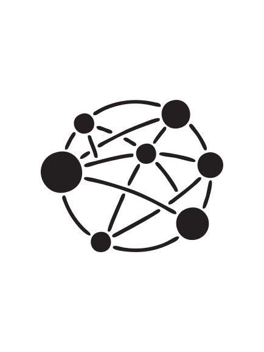
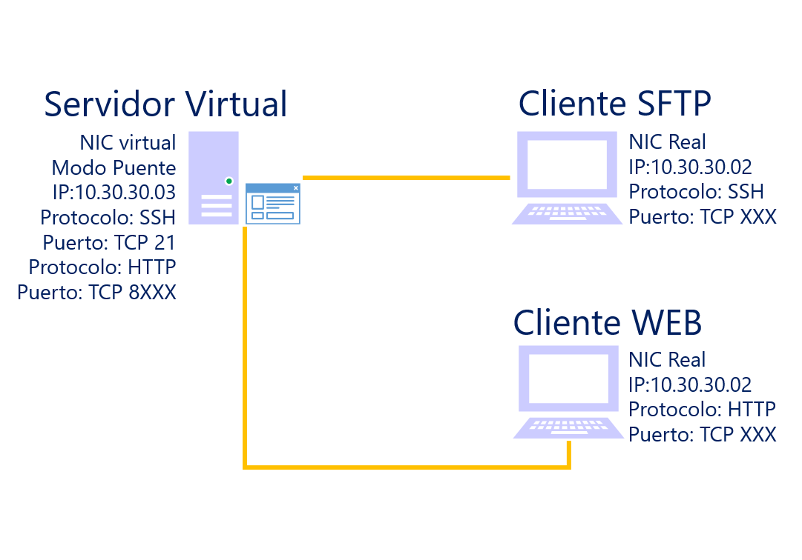
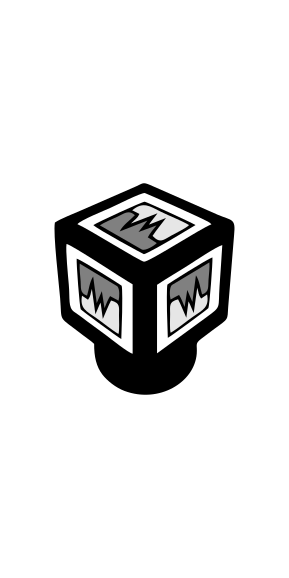
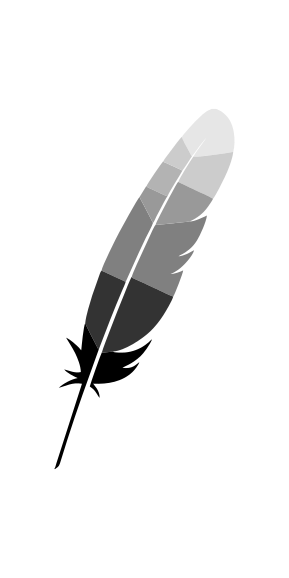
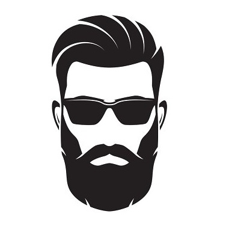

Desafio 03 - Laboratorio 01
Implementación de un entorno de trabajo virtual para prueba y desarrollo de aplicaciones web

Presentación
Buena Suerte...!!!
¡¡¡. . . Actividades !!!
1
Hypervisor
2
Instalación MV
3
GNU/Linux
4
Apache2
5
Sitio Web
Esquema lógico

Comencemos...

Instalación
1
Hypervisor!
Instalación del Hypervisor Virtual Box....
Configuración
2
Maquina Virtual!
Configuración de la maquina Virtual....
Instalación
3
GNU/Linux!
Instalación del servidor UbuntuServer Xenial

Instalación
4
Apache!
Instalación del servidor web Apache....
Configuración
5
Sitio Web!
Configuración del sitio web de ejemplo....
Quiénes?
Estudiante 01

reemplazar por gustos e intereses particulares
su mayor deseo!!
End